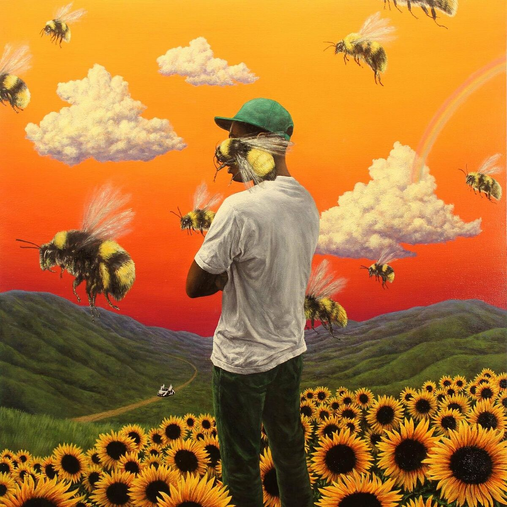
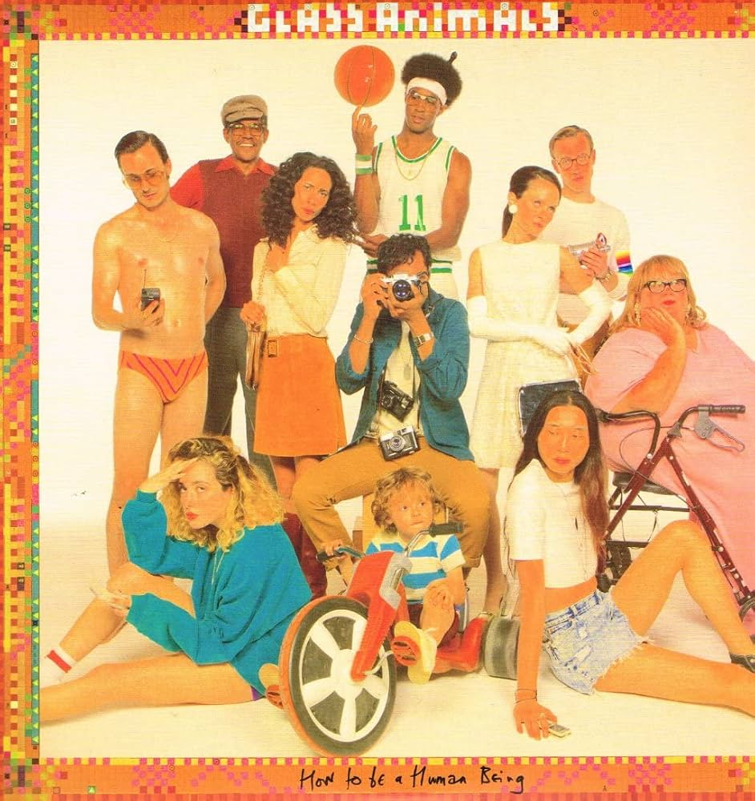
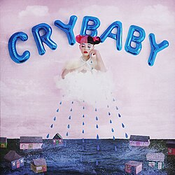

...☆
por:
ℊ𝔢o★
Lobo
meta de vida
Just like animals
I just want it more
She's so crazyyy lov her
She's so crazyyy lov her2

Tyler The Creator(feat. Kali Uchis)
See You Again
Okay, okay, okay, okay
Okay, okay, oh
You live in my dream state
Relocate my fantasy
I stay in reality
You live in my dream state
Any time I count sheep
That's the only time we make up, make up
You exist behind my eyelids, my eyelids
Now I don't wanna wake up
20/20, 20/20 vision
Cupid hit me, cupid hit me with precision, I-
Wonder if you look both ways
When you cross my mind, I said, I said
I'm sick of, sick of, sick of, sick of chasing
You're the one that's always running through my daydreams, I-
I can only see your face when I close my eyes
Can I get a kiss? (Can I get a kiss?)
And can you make it last forever? (Oh, forever)
I said I'm 'bout to go to war (go to war)
I don't know if I'ma see you again (see you again)
Can I get a kiss? (Can I)
And can you make it last forever? (Can You?)
I said I'm 'bout to go to war (‘bout to)
And I don't know if I'ma see you again (uh, switch it up)
One more time?

Glass Animals
Pork Soda
HAVEFUN ☆
Pineapples are in my head
(Pineapples are in my head)
Got nobody 'cause I'm brain dead
(Got nobody 'cause I'm brain dead)

Melaine Martinez
HAVEFUN ☆
Your skin is warm like an oven
Your kiss is sugary sweet
Your fingers feel like cotton
When you put your arms around me
I feel like I'm just missing
Something whenever you leave
We've got all the ingredients
Except you loving me
And respectfully
I'm not a piece of cake
For you to just discard
While you walk away
With the frosting of my heart
So I'm taking back what's mine, you'll miss
The slice of heaven that I gave to you last night
You smell just like vanilla
You taste like buttercream
You're filling up my senses
With empty calories
I feel like I'm just missing
Something whenever you leave
You've got all the ingredients
Except you needing me
So respectfully
I'm not a piece of cake
For you to just discard
While you walk away
With the frosting of my heart
So I'm taking back what's mine, you'll miss
The slice of heaven that I gave to you last night
AURORA
Cure For Me
HAVEFUN ☆
I run from the liars, the fuel on the fire
I know I created myself
I know I can't fight
The sad days and bad nights
But I never asked for your help
You got hurt, no, we don't belong
Together, so you took the love
From my arms into the
Arms of yours
But I don't need a cure for me
I don't need it
No, I don't need a cure for me
I don't need it
No, I don't need a cure for me
Dance on the Moon
HAVEFUN ☆
This voice, is it calling for a touch to be undone?
I hope love will come to us again
As a place we all can come
And if I'm blinded, will my eyes become the planets?
Will I float? Will I drown?
Links
Inicio
Contatos_Suspeitos
Atividade1
Tabelas
principal inspiração para essa página: